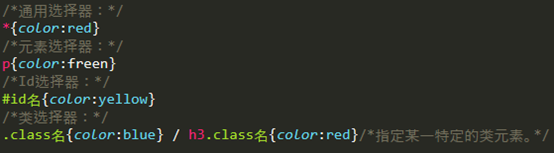

原文连接:https://www.cnblogs.com/chenJieLing/p/11643906.html
1.引入外部样式表的格式：
<link rel=”stylesheet” type=”text/css” href=”../css/style1.css”>
2.样式表第一行应注明编码类型：
@charset “utf-8”;
3.css语法：
①一个元素中多个属性用分号隔开，多个元素之间用逗号隔开；
②元素中属性的值一般不加引号，但是当值是若干个单词，就要给值加引号；
③注释：/*```*/ （快捷键是ctr+?）；
④优先级：内联样式>内部样式>外部样式；但是!important是强制优先的作用；
4.css选择器：行内样式优先级>id选择器优先级>类选择器优先级>元素选择器优先级
①常用选择器：

②属性选择器：
⑴选择具有value和style属性的input元素：
⑵选择具有value属性且属性值等于vip的input元素：
⑶选择具有value属性且属性值有多个且其中一个的值等于vip的input元素：
⑷选择具有lang属性且属性值以en开头且用’-’分隔的p元素：
⑸选择具有value属性且属性值以vip开头的input元素：
⑹选择具有value属性且属性值以vip结尾的input元素：
⑺选择具有value属性且属性值包含vip的input元素：
③关系选择器：
⑴后代选择器（包含选择器）：
⑵子元素选择器：与后代选择器相比，只能选择作为某元素子元素的元素，缩小了选择范围。
⑶相邻选择符：选择紧贴在**元素之后的元素。
⑷兄弟选择器：选择**元素之后的所有兄弟元素。
④伪元素选择器：
⑴E:first-letter/e::first-letter：设置e元素内第一个字符的样式。
⑵E:first-line/e::first-line：设置e元素内第一行样式。
⑶E:before/e::before：在每个e元素之前插入内容。用来和content属性一起使用。

⑷E:after/e::after：在每个e元素之后插入内容。用来和content属性一起使用。
⑸E:selection/e::selection：设置对象被选择时的颜色。
⑤伪类选择器：
E:first-child：选择父元素的第一个子元素e。
:root：选择文档的根元素。
E:last-child：最后一个子元素e。
E:only-child：仅有的一个子元素e。
E:only-of--type：只有一种类型的子元素。
E:nth-child(n)：匹配父元素的第n个子元素e。
E: nth-last-child(n)：匹配父元素的倒数第n个子元素e。
E: first-of--type：匹配同类型中第一个同级兄弟元素e。
E: last-of--type：匹配同类型中最后一个同级兄弟元素e。
E: nth-of-type(n)：匹配同类型中第n个同级兄弟元素e。
E: nth-last-of-type(n)：匹配同类型中倒数第n个同级兄弟元素e。
E:empty：匹配没有任何子元素的元素。
⑥UI伪类选择器：
E:active：向被激活的元素添加样式（点击的时候）。
E:hover：当鼠标悬浮在元素上方时，向元素添加样式。
E:link：当未被访问的链接添加样式。
E:visited：向已被访问的链接添加样式。
⑦其他选择器：
E:focus：向拥有键盘焦点的元素添加样式。
E:lang(en)：向带有指定lang属性的元素添加样式。
#E:target：选择当前活动的锚点元素。
:not(E)：选择e元素之外的每个元素。
Input:checked：选择每个被选中的input元素。
Input:disabled：选择每个被禁用的input元素。
Input:enabled：选择每个被启用的input元素。